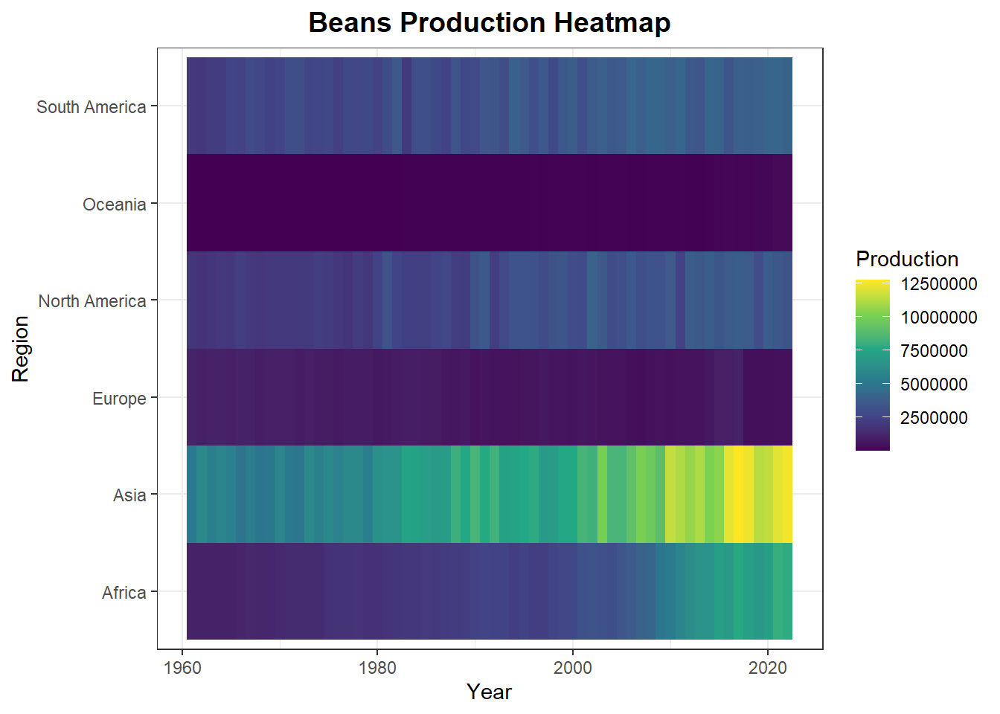
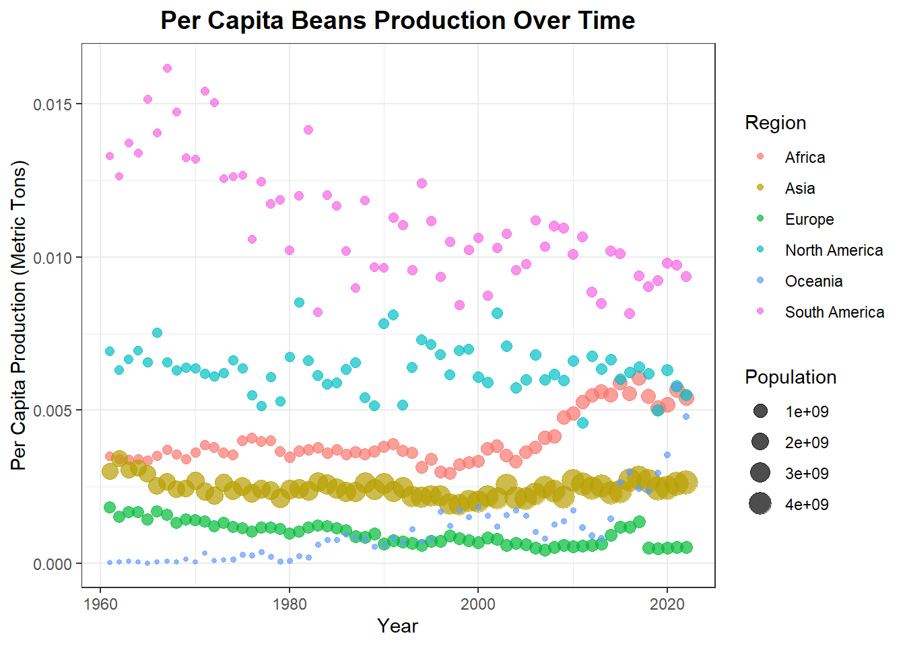

library(jsonlite)
library(rvest)
library(httr2)
library(tidyverse)
library(finalfit)
theme_set(theme_bw())BEANS PRODUCTION VISUALIZATION
# Fetch the data
df <- read.csv("https://ourworldindata.org/grapher/bean-production.csv?v=1&csvType=full&useColumnShortNames=true")
# Fetch the metadata
metadata <- fromJSON("https://ourworldindata.org/grapher/bean-production.metadata.json?v=1&csvType=full&useColumnShortNames=true")
# Fetch the data
world_population <- read.csv("https://ourworldindata.org/grapher/population-regions-with-projections.csv?v=1&csvType=full&useColumnShortNames=true")
# Fetch the metadata
population_metadata <- fromJSON("https://ourworldindata.org/grapher/population-regions-with-projections.metadata.json?v=1&csvType=full&useColumnShortNames=true")beans <- df %>%
rename("production"= beans__dry__00000176__production__005510__tonnes)missing_glimpse(beans)| label | var_type | n | missing_n | missing_percent | |
|---|---|---|---|---|---|
| Entity | Entity | 9799 | 0 | 0.0 | |
| Code | Code | 9799 | 0 | 0.0 | |
| Year | Year | 9799 | 0 | 0.0 | |
| production | production | 9799 | 0 | 0.0 |
continents <- beans %>%
filter(Entity %in% c("Europe","Africa","North America","South America","Asia",
"Oceania"))
fao_subregions <- beans %>%
filter(str_detect(Entity,"FAO"))
income_groups <- beans %>%
filter(str_detect(Entity,"ncome")) %>%
filter(!str_detect(Entity,"FAO"))
usa <- beans %>%
filter(Entity == "United States")
development_groups<- beans %>%
filter(str_detect(Entity,"Countries"))beans_continents <- continents %>%
distinct(Entity) %>%
pull(Entity)
continents_pop <- world_population %>%
filter(Entity %in% beans_continents,Year >=1961 & Year<=2022)
continents <- inner_join(continents,continents_pop, by =c("Entity","Code", "Year"),relationship = 'many-to-many')countries <- beans %>% filter(Code !="",Entity != "World")
pop_countries <- world_population %>% filter(Code !="",Entity != "World",
Year >=1961 &Year<=2022)
beans_countries <- countries %>%
distinct(Entity) %>%
pull(Entity)
pop_beans_countries <- pop_countries %>%
filter(Entity %in% beans_countries)
countries <- inner_join(countries,pop_countries,by =c("Entity","Code", "Year"),relationship = 'many-to-many')total_prod_year <- continents %>%
group_by(Year) %>%
summarise(total_production = sum(production))
total_prod_year %>%
ggplot(aes(x = Year, y=total_production ))+
geom_line(color = "steelblue",linewidth = 1)+
geom_point(color = "red")+
labs(title = "Global Beans Production Over the Years",
x = "Year",
y = "Production (Metric Tons)",
caption = "Source:Ourworldindata.org"
)+
theme( plot.title = element_text(hjust = 0.5, size = 14, face = "bold"),
axis.title = element_text(size = 12),
axis.text = element_text(size = 10))The chart shows a significant upward trend in global bean production from 1961 to 2022, reflecting steady growth driven by rising demand or advances in agriculture. While production consistently increases, there are periodic fluctuations, likely due to factors such as weather or market dynamics. Notably, the growth accelerates after 2000, with sharper rises and higher peaks, highlighting increased production efficiency or expanded cultivation during this period.
continents %>%
ggplot(aes(x = Year,y = production, colour = Entity))+
geom_line(size = 1)+
labs(title = "Trends in Beans Production Across Continents (Yearly Analysis)",
subtitle = "A visualization of annual production trends for major continents",
x = "Year",
y = "Production (Metric Tons)",
color = "Continent"
)+
theme(
plot.title = element_text(hjust = 0.5, size = 14, face = "bold"),
plot.subtitle = element_text(hjust = 0.5, size = 12),
legend.position = "right",
axis.title = element_text(size = 12),
axis.text = element_text(size = 10)
)The line plot illustrates trends in bean production across continents from 1961 to 2022. Asia consistently leads in production, showing a steady and significant increase over time. Africa exhibits remarkable growth, particularly after 2000, surpassing South America and becoming the second-largest producer by 2020. South America also experiences notable growth, especially post-2000, but remains behind Africa in recent years. Europe and North America maintain relatively stable and moderate production levels throughout the period, while Oceania’s contribution remains minimal and negligible. Overall, the plot highlights Asia’s dominance, Africa’s rapid rise, and South America’s steady progress in bean production.
continents %>%
ggplot(aes(x = Year,y = Entity,fill = production))+
geom_tile()+
scale_fill_viridis_c(option = "viridis")+
labs(
title = "Beans Production Heatmap",
x = "Year",
y = "Region",
fill = "Production"
)+
theme( plot.title = element_text(hjust = 0.5, size = 14, face = "bold"))
The heatmap illustrates bean production trends across regions from 1961 to 2022, with color intensity representing production levels. Asia remains the dominant producer, steadily increasing from moderate levels (green) to the highest production levels (yellow) by 2020. Africa shows significant growth, starting from low production (blue) in the 1960s and surpassing South America after 2000, reaching higher levels (green) by 2020. South America, while showing noticeable growth, remains at slightly lower production levels compared to Africa in recent decades. Europe and North America maintain relatively stable but moderate production, while Oceania continues to have negligible production throughout the period. The visualization highlights Asia’s dominance, Africa’s remarkable rise, and South America’s steady growth in global bean production.
continents %>%
ggplot(aes(x = Year, y = production, fill = Entity))+
geom_area(alpha= 0.8)+
labs(
title = "Regional Contribution to Global Beans Production",
x = "Year",
y = "Production (Metric Tons)",
fill = "Region"
)+
theme(
plot.title = element_text(hjust = 0.5, size = 14, face = "bold"),
axis.title = element_text(size = 12),
axis.text = element_text(size = 10)
)The stacked area plot displays the regional contributions to global bean production from 1960 to 2020. Asia dominates throughout the period, with a steadily increasing share that contributes significantly to the global total. Africa shows notable growth, particularly after 2000, becoming the second-largest contributor by 2020 and surpassing South America, which also experiences substantial growth but remains third. Europe and North America maintain relatively stable contributions, with modest increases over time, while Oceania’s contribution remains minimal and negligible
countries %>%
group_by(Entity) %>%
summarise(Total_production = sum(production)) %>%
slice_max(order_by = Total_production, n= 5) %>%
ggplot(aes(x = reorder(Entity,Total_production),y = Total_production,fill = Entity))+
geom_col(show.legend = FALSE)+
coord_flip()+
labs(
title = "Top 5 Beans Producing Countries",
x = "Country",
y = "Total Production (Metric Tons)"
)+
theme( plot.title = element_text(hjust = 0.5, size = 14, face = "bold")) 
The bar chart highlights the top five bean-producing countries based on total production in metric tons. India leads significantly, with the highest production far exceeding other countries. Brazil ranks second, followed by China, both with substantial but lower production compared to India. Myanmar and the United States round out the top five.
continents %>%
mutate(PerCapitaProduction = production/population) %>%
ggplot(aes(x = Year, y= PerCapitaProduction, size = population,
color = Entity))+
geom_point(alpha= 0.7)+
labs(
title = "Per Capita Beans Production Over Time",
x = "Year",
y = "Per Capita Production (Metric Tons)",
size = "Population",
color = "Region"
)+
theme(plot.title = element_text(hjust = 0.5, size = 14, face = "bold"))
The scatter plot shows per capita bean production over time across different regions, with point size representing population. South America consistently has the highest per capita production, remaining well above other regions throughout the period.
continents %>%
group_by(Entity) %>%
arrange(Year) %>%
mutate(GrowthRate = (production - lag(production)/lag(production)*100)) %>%
ggplot(aes(x = Year, y= GrowthRate, color = Entity))+
geom_line(size = 1)+
labs(
title = "Beans Production Growth Rates by Region",
x = "Year",
y = "Growth Rate (%)",
color = "Region"
)+
theme(plot.title = element_text(hjust = 0.5, size = 14, face = "bold"))The line plot shows bean production growth rates by region from 1961 to 2022. Asia consistently leads with the highest growth rates, demonstrating a steady and substantial increase over time. Africa exhibits significant growth, particularly accelerating after 2000, suggesting major improvements in production capacity. South America and North America show moderate growth, with periodic fluctuations but a clear upward trend overall.